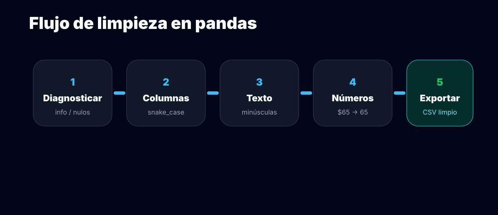
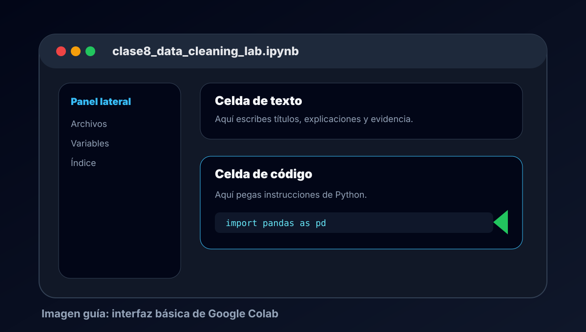
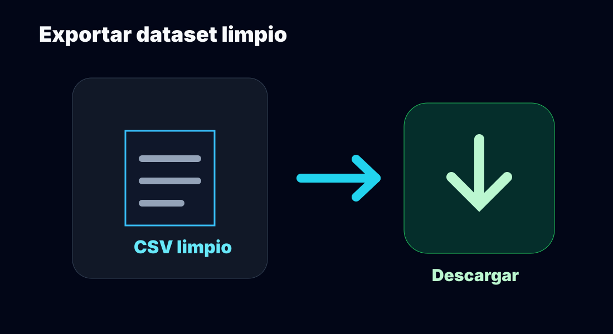
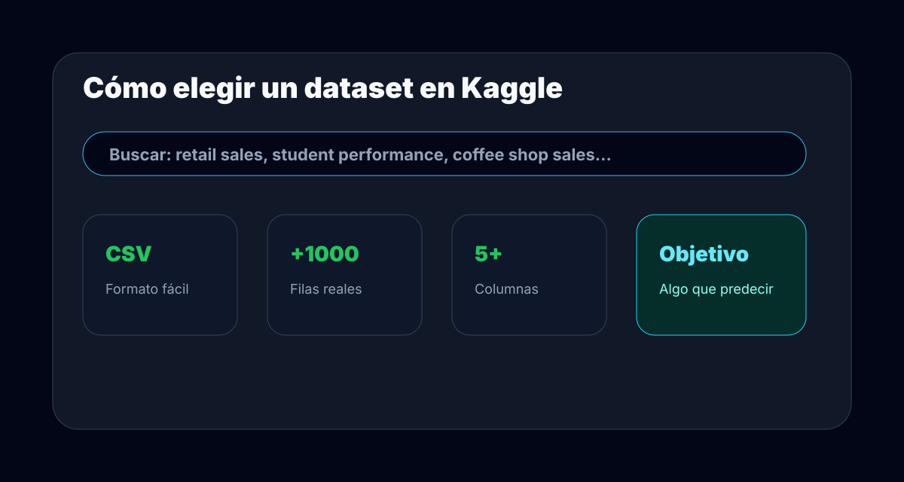

En esta clase aprenderás a limpiar un dataset en Google Colab paso a paso.
La página está diseñada para guiarte sin depender de una explicación adicional
del maestro.
Limpiar datos significa corregir problemas para que una tabla sea confiable.
Una IA no entiende intenciones: aprende de los datos que le entregas. Si los datos
están mal escritos, incompletos o duplicados, la IA puede aprender patrones incorrectos.
🧾
Dataset sucio
Tiene valores vacíos, textos inconsistentes, números mal escritos, duplicados o errores de captura.
🧹
Limpieza
Proceso donde corriges columnas, texto, números, fechas, faltantes y duplicados.
🤖
Dataset listo para IA
Tabla clara, consistente y documentada que puede usarse para análisis o entrenamiento.

Multimedia
Videos de apoyo listos para integrar
Dejé espacios preparados para videos propios. Cuando me compartas los archivos o links,
los conecto directamente. Por ahora cada tarjeta incluye el guion exacto de lo que debe explicar el video.
Video 1
Apoyo visual para la práctica
Revisa este video para reforzar el proceso de limpieza y preparación de datos.
Google Colab es el espacio donde vas a escribir texto, ejecutar Python y revisar
resultados. Un notebook mezcla explicación y código en un mismo archivo.

Instrucciones exactas
Abre Google Colab.
Selecciona Archivo → Nuevo notebook.
Cambia el nombre del archivo.
Usa este nombre: clase8_data_cleaning_lab.ipynb.
Resultado esperado
Debes tener un notebook vacío con una primera celda lista para escribir código.
Error común
Si no puedes editar el nombre, da clic sobre el título del notebook en la parte superior izquierda.
Paso 2
Escribir el título y cargar pandas
Antes del código, agrega una celda de texto para documentar qué estás haciendo.
Después importa pandas, que será la herramienta principal para manipular tablas.
Qué estás haciendo
Vas a preparar el notebook para trabajar con datos. La celda de texto sirve como
portada y la celda de código carga las librerías necesarias.
Por qué importa
Documentar tu notebook permite que otra persona entienda tu proceso. En análisis
de datos no solo importa el resultado: también importa explicar cómo llegaste a él.
Celda de texto
# Clase 8 — Data Cleaning Lab
En este notebook aprenderé a limpiar un dataset usando Python y pandas.
El objetivo es convertir un dataset sucio en un dataset limpio que pueda usarse en un proyecto de Inteligencia Artificial.
Celda de código
import pandas as pd
from io import StringIO
Paso 3
Crear un dataset sucio de práctica
Usaremos un dataset pequeño de cafetería para que todos vean los mismos errores.
Este dataset simula datos reales capturados con descuidos comunes.
Antes de ejecutar el código, observa estos problemas
Frappe, frappé y FRAPE parecen el mismo producto, pero están escritos diferente.
$55, 55 pesos y $0 son precios, pero están guardados como texto.
Hay valores vacíos en calificación y recomendación.
Hay una fecha inválida: fecha incorrecta.
Hay una fila duplicada para practicar cómo detectarla.
Colab debe mostrar las primeras filas de un dataset creado manualmente para practicar limpieza.
El dataset contiene errores intencionales de limpieza: categorías escritas de diferentes formas, precios como texto, fechas problemáticas, valores faltantes y duplicados.
Si Colab marca un error por formato de copiado, revisa comillas, indentación o pide apoyo a Gemini/Colab para depurar.
Paso 4
Diagnosticar el dataset
Diagnosticar significa revisar el estado del dataset antes de modificarlo.
Nunca limpies datos sin saber primero qué problemas existen.
df.head()
Muestra las primeras filas para revisar visualmente la estructura.
df.info()
Muestra columnas, cantidad de datos no vacíos y tipo de dato.
La regla profesional es simple: conserva el dataset original y limpia una copia.
Así puedes comparar el antes y el después.
Copia de trabajo
df_limpio = df.copy()
df
Dataset original. No se toca.
df_limpio
Dataset corregido paso a paso.
Paso 7
Normalizar texto y categorías
En un dataset real, una misma categoría puede venir escrita de varias formas.
Si no corriges eso, la IA puede interpretar que son categorías distintas aunque
en realidad signifiquen lo mismo.
Problema
FrappefrappéFRAPE
→
Después de limpiar
frappefrappefrappe
¿Qué hace este bloque?
Primero convierte el texto a una forma uniforme: quita espacios sobrantes,
pone todo en minúsculas y elimina acentos.
Después corrige variantes equivalentes con replace(). Esto sirve para decirle
al dataset que frape y frappe deben tratarse como la misma categoría.
La mediana es menos sensible a valores extremos que el promedio.
Paso 9
Corregir fechas, variable objetivo y duplicados
En este paso tomamos decisiones importantes de limpieza. No solo corregimos formato:
también decidimos qué filas siguen siendo útiles para un análisis o para una IA supervisada.
Este paso resuelve 3 problemas:fechas inválidasrecomendaciones vacíasfilas duplicadas
pd.to_numeric(..., errors="coerce") intenta convertir la
calificación a número. Si encuentra algo inválido, lo pasa a NaN.
pd.to_datetime(..., errors="coerce") intenta convertir la
fecha a formato de fecha. Si no puede, la deja como NaT,
que significa “fecha no válida”.
Bloque B
Corregir recomendación vacía
.replace({"nan": None, "": None}) convierte textos vacíos
o cadenas que aparentan ser valores faltantes en un valor realmente nulo.
Esto es importante porque pandas ya puede reconocer que ahí falta información
y actuar sobre ella correctamente.
Bloque C
Eliminar filas que ya no sirven
dropna(subset=["recomendacion"]) elimina filas donde falta la
recomendación, porque esa columna puede ser la variable objetivo.
drop_duplicates() elimina filas repetidas para que un mismo caso
no cuente dos veces dentro del dataset.
Fecha inválida
Se marca como NaT.
Recomendación vacía
La fila se elimina.
Fila duplicada
Se conserva solo una versión.
Qué debes entender
Limpiar datos también implica decidir qué registros todavía sirven
para el objetivo del análisis.
Error común
Eliminar filas sin justificar por qué. Toda decisión de limpieza debe
responder a una necesidad del proyecto.
Paso 10
Validar el dataset limpio
Después de limpiar, debes comprobar que el dataset realmente mejoró. No basta con ejecutar código:
tienes que verificar el resultado.
Código de validación
print("Filas y columnas originales:")
print(df.shape)
print("Filas y columnas después de limpiar:")
print(df_limpio.shape)
print("Valores faltantes después de limpiar:")
print(df_limpio.isnull().sum())
print("Duplicados después de limpiar:")
print(df_limpio.duplicated().sum())
df_limpio.info()
df_limpio.describe()
Qué debes comprobar
Que precio_mxn ya sea numérica.
Que no haya duplicados.
Que la columna recomendacion no esté vacía.
Que los nombres de columnas sean claros.
Que puedas explicar qué filas se eliminaron o modificaron.
Paso 11
Exportar y descargar el CSV limpio
El archivo limpio será el insumo para clases posteriores. En una siguiente clase se puede usar
para análisis, visualización o un primer modelo de predicción.

Código
df_limpio.to_csv("dataset_limpio_clase8.csv", index=False)
from google.colab import files
files.download("dataset_limpio_clase8.csv")
Resultado esperado
El navegador debe descargar un archivo llamado dataset_limpio_clase8.csv.
Reto Kaggle
Aplicar el proceso a un dataset real
Ahora usarás datos reales. Kaggle tiene datasets grandes con problemas auténticos:
columnas mal documentadas, datos faltantes, formatos variados y categorías inconsistentes.

El dataset debe cumplir
Formato CSV.
Más de 1,000 filas.
Mínimo 5 columnas.
Debe tener texto, números y categorías.
Debe permitir una pregunta de análisis o predicción.
!pip install -q kagglehub
import kagglehub
import os
import pandas as pd
path = kagglehub.dataset_download("usuario/nombre-del-dataset")
print("Dataset descargado en:", path)
for carpeta, subcarpetas, archivos in os.walk(path):
for archivo in archivos:
print(os.path.join(carpeta, archivo))
Ficha que debe llenar el alumno
Nombre del dataset.
Fuente.
Cantidad de filas.
Cantidad de columnas.
Columnas numéricas.
Columnas categóricas.
Valores faltantes detectados.
Variable objetivo posible.
Entrega
Evidencia final
La evidencia debe demostrar que no solo ejecutaste código, sino que entendiste
qué problema tenía el dataset, qué decisiones tomaste para limpiarlo y por qué
el resultado final puede usarse en una siguiente fase de análisis o IA.
1
Notebook de Colab
Debes entregar el notebook con todo el proceso realizado:
carga de datos, diagnóstico, limpieza, validación y exportación.
2
Dataset limpio
Debes entregar el archivo CSV limpio generado al final de la práctica.
3
Reporte de evidencia
Debes incluir una explicación breve de los problemas detectados,
acciones realizadas y conclusión técnica.
Entregable obligatorio
Sube a Classroom una carpeta o archivos individuales con:
Notebook de Colab: archivo .ipynb o enlace compartido de Colab.
# Evidencia Clase 8 — Data Cleaning Lab
## Integrantes
[Nombre del equipo o integrantes]
## Dataset utilizado
Nombre:
Fuente:
Tema:
Filas:
Columnas:
## Archivos entregados
- Notebook de Colab:
- Dataset limpio CSV:
- Reporte de evidencia:
## Problemas detectados
- Valores faltantes:
- Duplicados:
- Categorías inconsistentes:
- Valores fuera de rango:
- Tipos de dato incorrectos:
- Encabezados problemáticos:
## Acciones de limpieza realizadas
- Encabezados:
- Texto y categorías:
- Nulos:
- Duplicados:
- Tipos de datos:
- Valores raros:
- Fechas:
## Variables de entrada
[Lista de columnas que podrían usarse para analizar o predecir]
## Variable objetivo
[Columna que podría predecirse]
## Archivo generado
dataset_limpio_clase8.csv
## Validación final
Explica cómo comprobaste que el dataset quedó más limpio que al inicio.
## Conclusión
Explica si el dataset está listo para IA. Justifica tu respuesta con evidencia técnica.
## Entrega
La evidencia fue subida a Google Classroom en la actividad correspondiente.
Gamificación
Tablero de misiones
Marca cada misión conforme avances. La barra de XP se actualiza automáticamente.